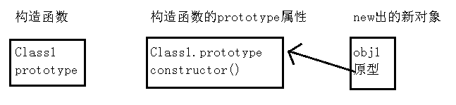
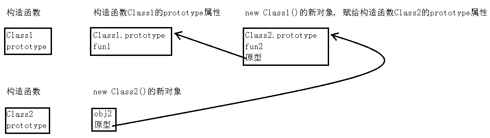

定义一个function Class1(){}, 那么Class1自动有属性prototype, map类型, 里面有constructor属性, 函数类型, 值为Class1.
结构为
Class1 = {
prototype: {
constructor: Class1
}
}
var obj1 = new Class1(), new表达式后跟函数调用, 产生的效果是, new自动创建一个新对象obj1, 赋予新对象obj1的原型为Class1.prototype, 执行: obj1.Class1(). 注意, new内部赋予了新对象的原型, js中无法访问新对象的原型属性. Class1.prototype的作用仅仅是让new能访问到, new内部会用它赋值给新对象的原型.
obj1.xxx, 访问obj1的属性xxx(可为函数也可为变量)时, 搜索顺序是: obj1对象, obj1的原型对象(js代码中无法访问), obj1原型对象的原型对象, obj1原型对象的原型对象的原型对象, ...

总结起来就是, 首先设置Class1的prototype属性, 增加一些函数, 然后调用new Class1(), 产生新对象, 新对象的原型就是Class1的prototype, 新对象的原型在js中是无法访问的.
多级继承, 原理就是, 让new Class1()生成一个对象, 它的原型为Class1.prototype. 然后把这个对象赋给Class2.prototype
function Class1() {}
Class1.prototype.fun1 = function () { console.log('Class1 fun1'); }
function Class2() {}
Class2.prototype = new Class1();
Class2.prototype.fun2 = function () { console.log('Class2 fun2'); }
var obj2 = new Class2();
执行
obj2.fun1()
输出
Class1 fun1
执行
obj2.fun2()
输出
Class2 fun2
